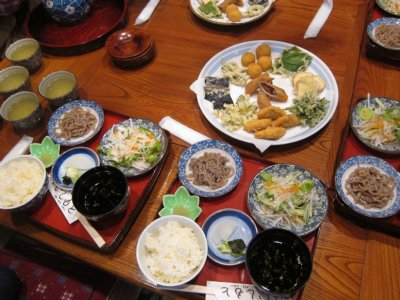
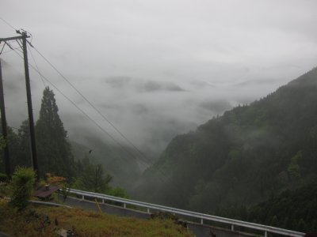
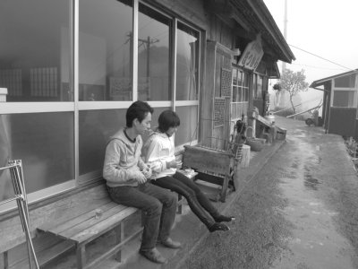
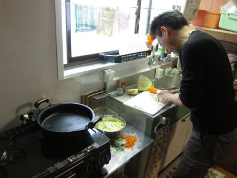
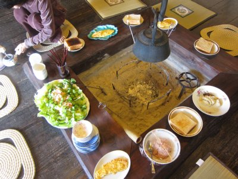

水窪古民家宿泊 | 2013年5月 幹事：じゅんじゅん |
|---|---|
| 水窪の大沢に農家民宿「ほつむら」がオープンしたというので、宴会がてら行ってきました。 大沢は天空の里と言われるほど、山の上の方に集落がある場所で、以前も何度か訪れています。 そこの古民家を改修して民宿として貸しているってこと。築100年以上の家です。 建物も素晴らしいけど、そこの景観が素晴らしいです。山と雲が目線で見られる感じでしょうか。 民宿と言っても自炊です。道具はありますが。ちなみにお風呂は薪風呂です！ | |
 「いしもと」で昼食 |  雑穀料理だけどガッツリいただく |
|  「ほつむら」前から雲海を眺める |  軒先にたたずむ二人 |
 これが薪風呂の釜 |  料理長の腕がうなります |
| 昼食を「いしもと」の雑穀を使った伝統料理を食します。つぶ食って言うんだけど、これが美味しいんだよね。 さて昼食食べたら、そく大沢へ。本日はちょっと雨で、山は雲に覆われていると思ったら、なんか雲海になってるじゃん！ カッコイイ〜 夕食の準備をしながら、既に宴会へ突入。 本日の献立は、ブロッコリーのペペロンチーノ ・鶏胸肉ポン酢炒め ・タケノコと豚肉の卵とじ ・ツナとマスタードの人参サラダ ・インゲンと人参の豚肉巻 です。 料理長はえいさん。 | |
 先に呑んじゃってますけどね |  囲炉裏囲んでの食事 |
 夕暮れの窓からの雲海 |  どうだ！と言わんばかりですが作ってません |
| 囲炉裏を囲みながら騒ぎました。途中、薪でお風呂を沸かしてね。 翌日は快晴。山が美しい。 朝食は ・コンビーフのリエット ・コールスローもどき ・タマネギのオムレツ 朝から腹一杯です。 | |
|  朝食も良いですね〜 |  土間から眺める景色も最高 |
| その後、いつもお世話になっている、わんわん塾へ。新しい小屋というか宴会場というかが出来たというので拝見しに。 つか、立派すぎる。これを一人で造ったなんて・・・ そこでも、イワナ（もしかしてヤマメ）とピザをご馳走になり、ホントに腹一杯。 ほんと、水窪は楽しく、美味しく、美しい所です。もちろん、それは住んでいる人が良いからなんだよね。今回も有り難う〜〜〜 | |
 「わんわん塾」の新しい砦 |  ココでも囲炉裏を囲みます |
| 写真＆コメント ｂｙ べっしー | |